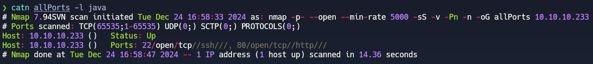
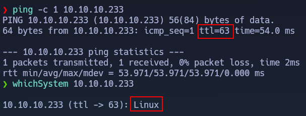

02/05/2025
Link resolución de la máquina en YouTube
textoprueba1
textoprueba2
textoprueba3

Desarrollado en 2025 por BunzoPy, con asistencia de ChatGPT para el desarrollo y contenido. La idea base de este diseño proviene de gunzf0x.